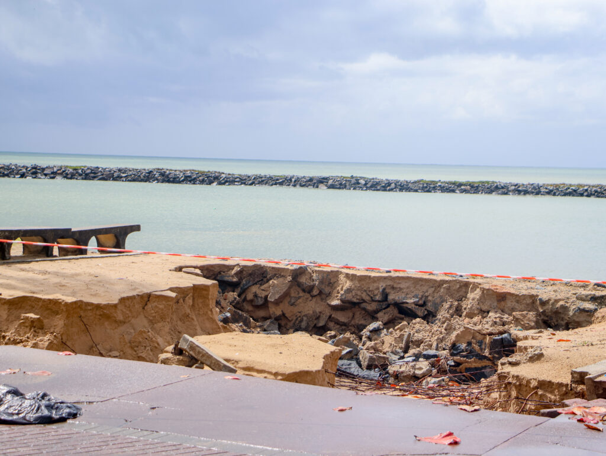
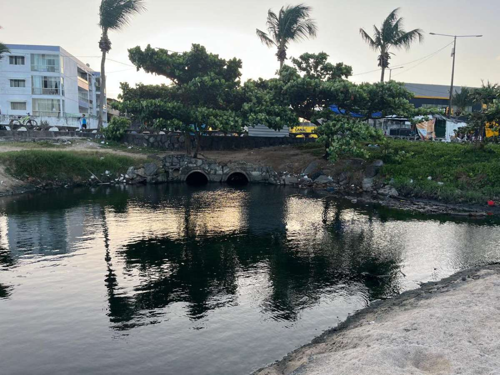
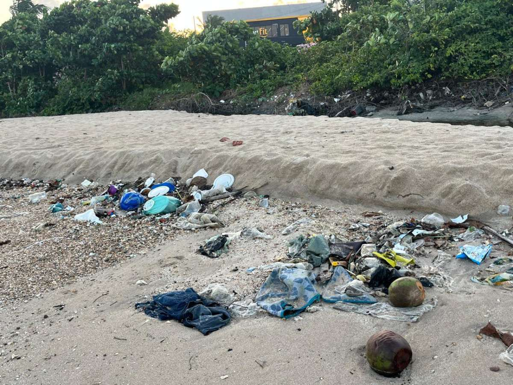

A REALIDADE DAS NOSSAS PRAIAS
O litoral pernambucano, conhecido por suas belezas naturais,
enfrenta problemas que ameaçam sua preservação e o bem-estar da população.
Em Paulista, Olinda e Recife, o avanço do mar, o despejo irregular de esgoto
e o descarte inadequado de resíduos revelam uma realidade que exige atenção.
Por trás das paisagens, existe um alerta: nossas praias estão perdendo espaço,
sofrendo com a poluição e colocando em risco os ecossistemas e a saúde pública.
Entender esses problemas é o primeiro passo para cobrar soluções e transformar essa realidade.
Quais são os problemas das nossas praias?
Da erosão costeira à poluição da água e da areia, o litoral pernambucano enfrenta desafios que ameaçam o meio ambiente, a saúde pública e a qualidade de vida da população. Conheça os principais problemas.
1. Avanço do mar e erosão costeira

O avanço do mar ameaça trechos do litoral pernambucano, especialmente a Praia do Janga, em Paulista. A força das ondas e das ressacas contribui para a perda de areia e para os danos à infraestrutura. Crateras, calçadões danificados e estruturas ameaçadas mostram que a erosão vai além de um problema ambiental: ela também coloca em risco o espaço público e a segurança da população.
Por que isso preocupa? A perda da faixa de areia reduz o espaço de lazer, ameaça estruturas próximas e exige intervenções para proteger a orla.
Fontes para consultar
2. Despejo irregular de esgoto no mar

O lançamento de esgoto e a chegada de águas contaminadas ao litoral comprometem a qualidade da água e podem colocar a saúde dos banhistas em risco. Problemas de saneamento e drenagem podem contribuir para a contaminação de trechos das praias, tornando necessário investigar a origem dos despejos e fiscalizar os pontos afetados.
Por que isso preocupa? A água contaminada pode transmitir doenças mesmo quando não apresenta sinais visíveis de poluição. Por isso, é importante consultar os boletins de balneabilidade antes de entrar no mar.
Fontes para consultar
3. Poluição das orlas e do mar

Garrafas, sacolas plásticas, embalagens e outros resíduos se acumulam nas praias e podem chegar ao oceano por meio dos rios, da chuva e das correntes marítimas. Em Olinda, o acúmulo de lixo na Praia Del Chifre evidencia como o descarte inadequado compromete a paisagem e a conservação do litoral. Parte desses resíduos pode prejudicar os animais marinhos e se fragmentar em partículas menores, como os microplásticos.
Por que isso preocupa? O lixo não desaparece quando é levado pela maré. Ele pode se espalhar pelo ambiente, ameaçar a fauna e prejudicar o uso das praias pela população.
Fontes para consultar
Quem são os responsáveis?
A situação das praias do litoral pernambucano é resultado de uma combinação de fatores naturais, mudanças climáticas e desafios na gestão pública.A prevenção de danos, a manutenção da infraestrutura e o planejamento urbano dependem de ações coordenadas entre diferentes órgãos governamentais.
1. Responsabilidade do poder público
As prefeituras têm responsabilidades relacionadas à manutenção dos espaços públicos, ao ordenamento urbano, à fiscalização dentro de suas competências e à conservação das orlas. Quando essas ações são insuficientes ou demoram a ser realizadas, os problemas podem se agravar, prejudicando moradores, comerciantes e frequentadores das praias.
Por que isso preocupa? A falta de manutenção e de planejamento adequado pode aumentar os riscos à segurança da população, prejudicar o uso dos espaços públicos e elevar os custos de recuperação da orla.
Fontes para consultar
2. Demora e falta de articulação entre governos
A recuperação de áreas costeiras afetadas pela erosão pode exigir a participação conjunta das prefeituras, do Governo do Estado e do Governo Federal. A demora na execução de intervenções na orla do Janga evidencia os desafios envolvidos na implementação de soluções. Atrasos administrativos e dificuldades de coordenação podem prolongar os problemas e fazer com que medidas emergenciais sejam necessárias repetidamente.
Por que isso preocupa? Quando as ações não acontecem de forma coordenada e contínua, os danos podem se agravar e a população pode continuar convivendo com estruturas deterioradas e áreas de risco.
Fontes para consultar
3. Ação da natureza e mudanças climáticas
A força das ondas, as ressacas marítimas e as características geográficas do litoral influenciam o processo de erosão. Além disso, as mudanças climáticas contribuem para a elevação do nível do mar e podem intensificar determinados eventos extremos, aumentando os riscos para áreas costeiras vulneráveis. Embora esses fenômenos naturais não possam ser controlados diretamente, seus impactos podem ser reduzidos por meio de planejamento, monitoramento e intervenções adequadas.
Por que isso preocupa? A erosão pode reduzir a faixa de areia, danificar calçadões e ameaçar estruturas próximas ao mar, exigindo medidas preventivas e obras de recuperação.
Fontes para consultar
- Prefeitura do Paulista — Monitoramento da erosão costeira
- Governo Federal — Intervenções para conter a erosão marinha
A responsabilidade é compartilhada, mas cada parte tem suas próprias atribuições. A natureza influencia a dinâmica do litoral, enquanto os governos e os órgãos competentes devem atuar no planejamento, na fiscalização e na proteção dos espaços costeiros. Acompanhar as medidas adotadas e cobrar transparência são passos importantes para buscar soluções duradouras para as praias do Janga e de todo o litoral pernambucano.